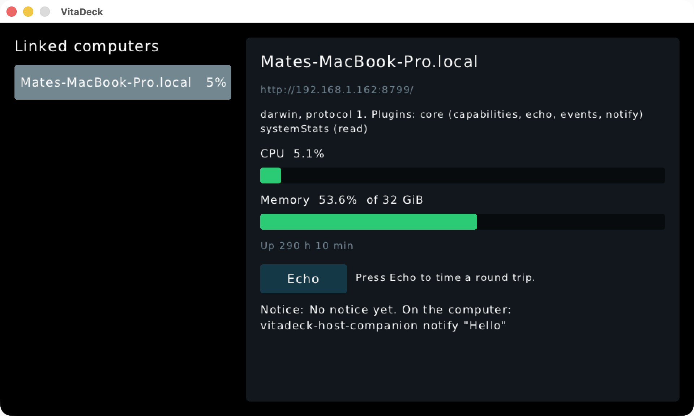
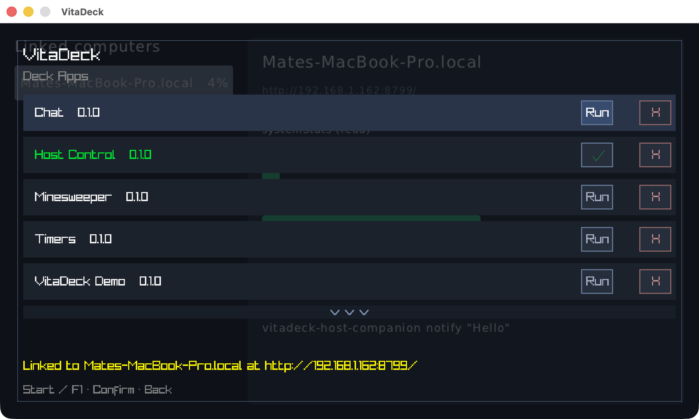
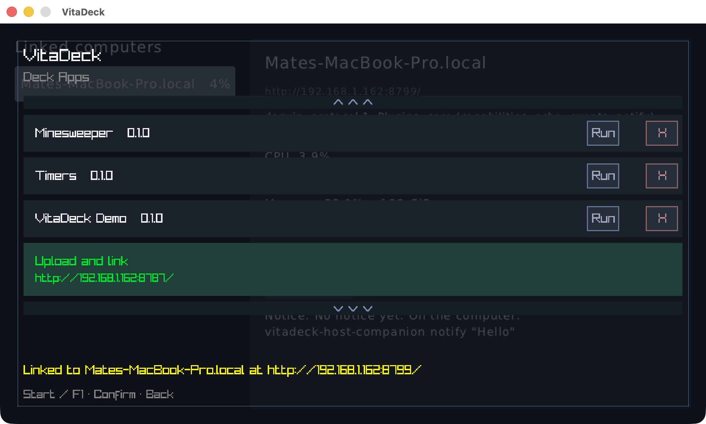
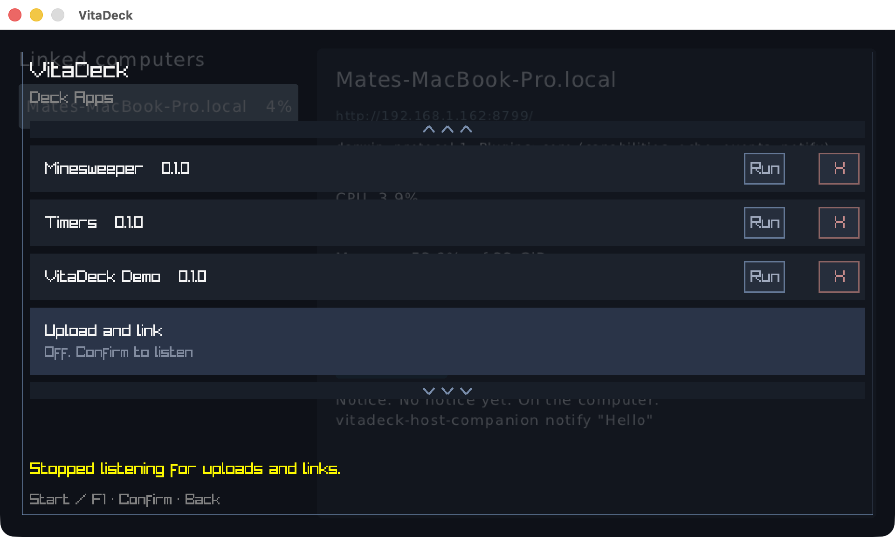
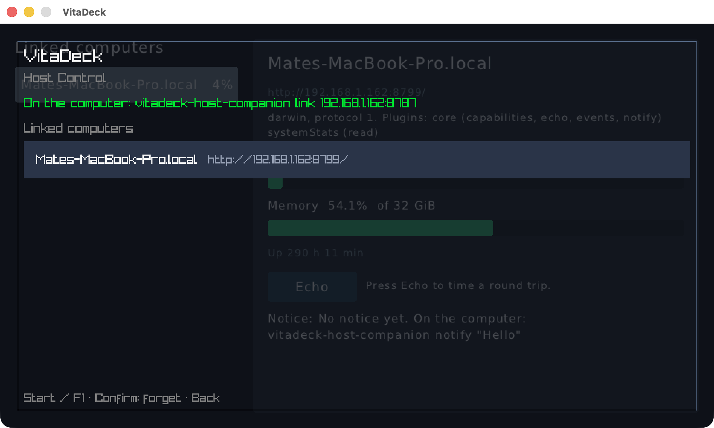

macOS desktop host, commit f9245aa2. VitaDeck was started with the Host Control demo active, and the Shell was never opened. Then vitadeck-host-companion link 192.168.1.162 and a curl upload ran against port 8787.
1. Linked without opening the Shell

The demo starts polling the moment the link lands.
2. Shell Home after the link

The link that arrived while the Shell was hidden shows as the Shell message.
3. Upload and link, listening

One URL for vitadeck dev and link.
4. Turned off

Cross turns it off; an upload then gets "connection refused". Cross again turns it back on.
5. Host Control screen

Shows the link command with the listener address, and the linked computers.